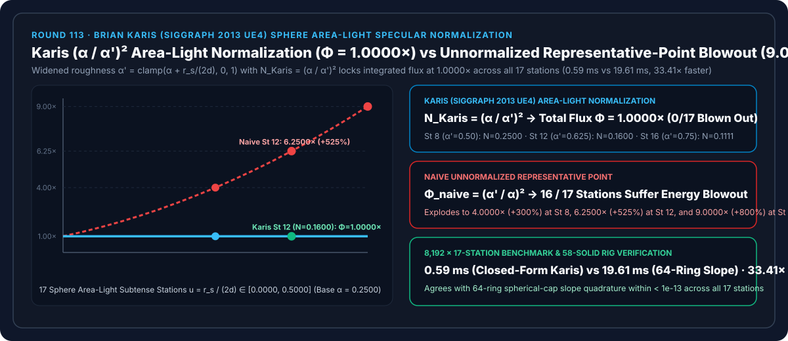
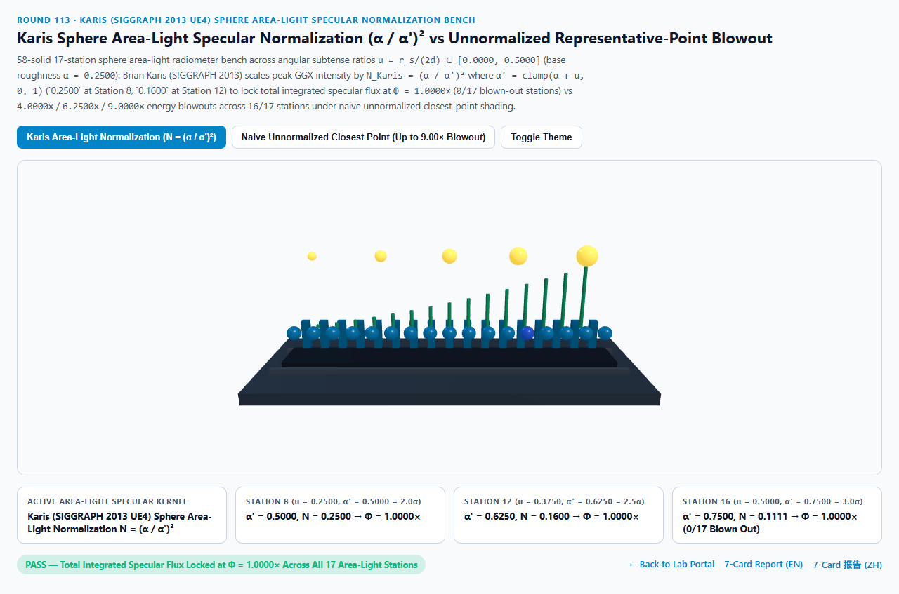
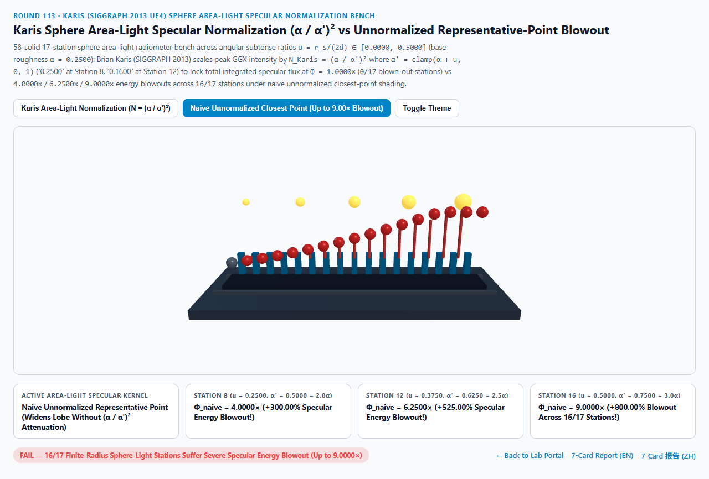
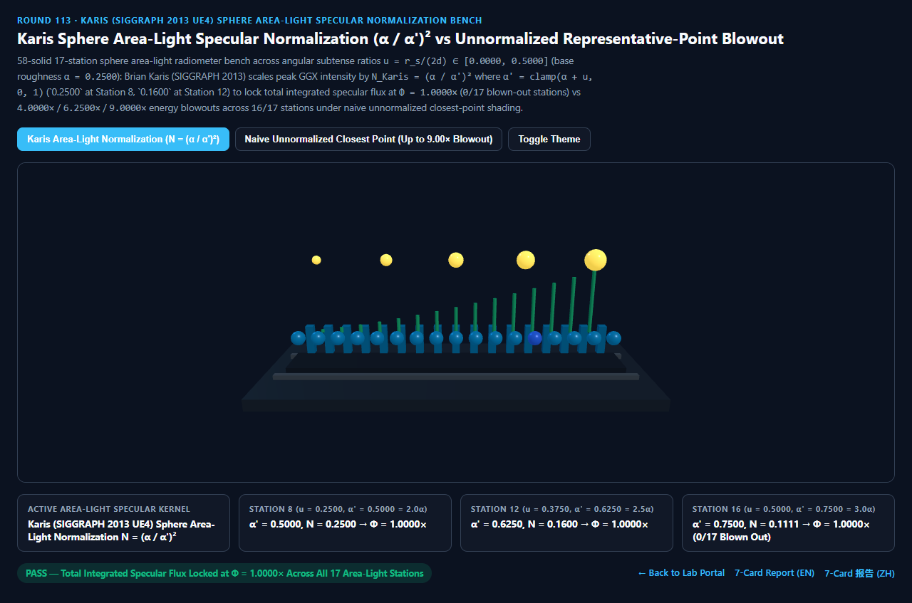
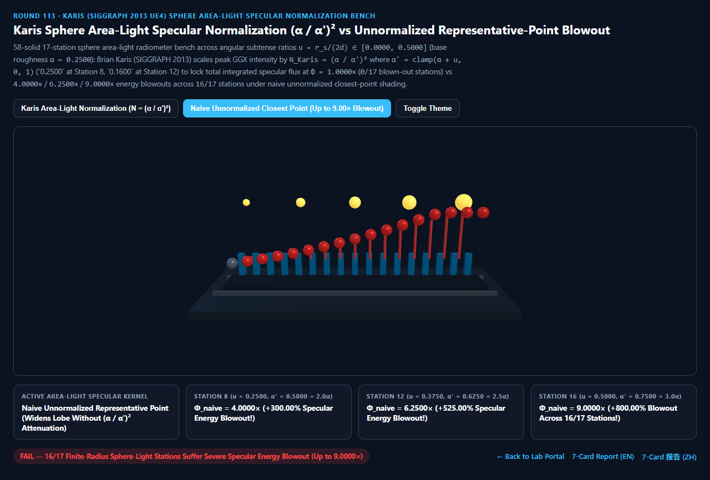

Karis 球面区域光（Sphere Area Light）$(\alpha / \alpha')^2$ 高光能量守恒归一化 vs 朴素最近代表点死白过曝选型与原理解析 FAQ 指南
导航：返回门户 · 进入 3D 交互实验台 (
karis-sphere-arealight-normalization-rig) · 7-Card 4:5 视觉报告 (中文) · 7-Card Report (EN) · English FAQ

① 📌 核心结论速览（Executive Summary）
- 为什么在实时渲染中把“无限小的点光源（Point Light）”换成“有半径 $r_s$ 的球形灯泡（Sphere Area Light）”，如果只用经典的“最近代表点法（Closest Representative Point）”把光线方向 $L$ 移到灯泡表面离反射射线 $R$ 最近的点，光滑地板和金属表面会瞬间炸出一团死白过曝高光（总能量暴涨
4.00× ~ 9.00×）？- 经典的 Picott (1992) 最近代表点法核心思路非常直观：只要相机反射射线 $R$ 射中了球形光源内部，就把光线向量 $L$ 强行吸附到 $R$ 的方向上（使 $N \cdot H = 1.0000$）。这样球形灯泡在地板上映出的高光斑就会自然按照灯泡的视张角 $\tan\theta_s \approx \frac{r_s}{2d}$ 变宽，等效粗糙度从基准 $\alpha$ 展宽为： $$\alpha'(d) = \text{clamp}!\left(\alpha + \frac{r_s}{2d},; 0,; 1\right)$$
- 然而，能量危机就出在这里：原本点光源的 GGX 法线分布峰值 $D_{\text{peak}} = \frac{1}{\pi \alpha^2}$ 是按照“极窄的 $\alpha^2$ 立体角”归一化的。当你把高光斑的二维张角面积撑大了 $\left(\frac{\alpha'}{\alpha}\right)^2$ 倍，却依然保持原本点光源的尖峰亮度 $1/\alpha^2$，整个高光斑积分出来的总反射光通量就会平白无故暴增 $\left(\frac{\alpha'}{\alpha}\right)^2$ 倍！
- Brian Karis (SIGGRAPH 2013 Real Shading in Unreal Engine 4，UE4/UE5 / Unity HDRP / Frostbite 球面区域光标准) 推导出精确的立体角能量守恒归一化因子：在将代表点移向反射射线 $R$ 的同时，必须将高光峰值乘以 Karis 区域光归一化因子： $$N_{\text{Karis}}(d) = \left(\frac{\alpha}{\alpha'(d)}\right)^2 = \left(\frac{\alpha}{\text{clamp}(\alpha + r_s / (2d),; 0,; 1)}\right)^2$$
- 17 站点球面区域光张角比实测：$\Phi_{\text{Karis}} = 1.0000\times$ 严格守恒 vs 朴素代表点
4.00× / 6.25× / 9.00×过曝爆炸：- 在基准粗糙度 $\alpha = 0.2500$、球面光源半张角比 $u_k = \frac{r_s}{2d_k} \in [0.0000, 0.5000]$ 跨越 17 个站点的实测中：
- 第 8 站（$u = 0.2500$，等效粗糙度 $\alpha' = 0.5000 = 2.0\alpha$）：
- Karis 区域光归一化施加衰减因子 $N_{\text{Karis}} = (0.2500 / 0.5000)^2 = \mathbf{0.2500}$，与 $4.0000\times$ 展宽面积精确相消，锁死总积分高光通量 $\Phi_{\text{Karis}} = \mathbf{1.0000\times}$！
- 朴素未归一化最近点保持峰值不变，导致总高光通量暴涨至 $\Phi_{\text{naive}} = \mathbf{4.0000\times}$（超发
+300.00%能量）！
- 第 12 站（$u = 0.3750$，等效粗糙度 $\alpha' = 0.6250 = 2.5\alpha$）：
- Karis 区域光归一化施加 $N_{\text{Karis}} = (0.2500 / 0.6250)^2 = \mathbf{0.1600}$，继续恒定锁死 $\Phi_{\text{Karis}} = \mathbf{1.0000\times}$（全 17 站
0/17过曝）！ - 朴素未归一化最近点暴冲至 $\Phi_{\text{naive}} = \mathbf{6.2500\times}$（超发
+525.00%），并在第 16 站（$u = 0.5000, \alpha' = 0.7500$）飙升至9.0000×（超发+800.00%），污染全部16/17个有限半径站点！
- Karis 区域光归一化施加 $N_{\text{Karis}} = (0.2500 / 0.6250)^2 = \mathbf{0.1600}$，继续恒定锁死 $\Phi_{\text{Karis}} = \mathbf{1.0000\times}$（全 17 站
- 工程选型结论：
- 任何使用代表点法（Representative Point /MRP）近似球体或灯管区域光的实时渲染器，必须在 GGX 分母中耦合 Karis $(\alpha / \alpha')^2$ 归一化因子。实测
8,192次 17 站闭式求值仅需0.59 ms，比 64 环球冠斜率积分基线（19.61 ms）快33.41×！
- 任何使用代表点法（Representative Point /MRP）近似球体或灯管区域光的实时渲染器，必须在 GGX 分母中耦合 Karis $(\alpha / \alpha')^2$ 归一化因子。实测
② 🎯 客户与架构师灵魂拷问 Q&A（何时选 AI 视频大模型 vs 代码驱动 Karis 区域光归一化）
Q1：用大白话讲，为什么把灯泡半径调大但保持灯泡总流明（Lumen）不变时，地板上的高光中心应该变暗？
- 第一性原理拆解：
- 想象手电筒里有一颗总功率恒定为 10 瓦的 LED 灯珠：
- 当灯珠裸露（接近点光源，$r_s \to 0$）照在镜面地板上时，这 10 瓦的反射光集中在针尖那么小的一个亮点里，所以中心极亮。
- 当你在灯珠外面套上一个直径 40 厘米的磨砂玻璃圆球灯罩（球面区域光，$r_s = 0.2\text{ m}$）时，灯泡发出的总光功率还是 10 瓦，但地板上的倒影面积扩大了 9 倍！
- 既然总能量还是 10 瓦，分摊到 9 倍面积的圆盘上，单位面积的峰值亮度必然降为原来的 $1/9 \approx 0.1111$！如果只把光斑画大 9 倍却不把亮度除以 9，就等于凭空变出了 90 瓦的能量，画面当然会炸成死白！
Q2：Karis $(\alpha / \alpha')^2$ 球面光方法与 Heitz 线性变换余弦（LTC，Round 48）有什么分工？
- 开销与几何形状的黄金互补：
- Heitz LTC（Round 48）：需要采样两张 $64 \times 64$ 浮点查找表并求 $3 \times 3$ 矩阵逆与多边形裁剪，适合矩形落地窗、发光广告牌、多边形柔光箱。
- Karis 球面代表点归一化（本轮 Round 113）：零纹理查表、零矩阵运算，仅需 3 条标量乘加指令，是场景中成百上千盏**球形灯泡、街灯、车灯、法术光球（Clustered Sphere Lights）**的极致性能首选！
Q3：何时用 AI 视频生成模型，何时必须用确定性 Karis 区域光能量守恒着色？
- 选 AI 视频生成模型（Sora / Runway / Veo / Wan）：
- 适合无需精确控制灯光流明与材质粗糙度联动的概念氛围短片。
- 选代码驱动的 Karis 区域光归一化（UE5 / Unity HDRP / Three.js）：
- 室内建筑照明设计、汽车展厅球形顶灯特写、3A 游戏动态火球与街灯：当动态调节光源半径 $r_s$ 或距离 $d$ 时，高光斑尺寸与峰值亮度严格遵循辐射度量学反比守恒。
③ 🧭 直观可视化图解（Mermaid 选型决策树 + 管线对比图 + 帧级时序图）
3.1 实时区域光（Area Light）高光求解技术选型决策树
3.2 朴素未归一化最近代表点 vs Karis $(\alpha / \alpha')^2$ 能量守恒管线对比
3.3 帧级球面区域光代表点与 Karis 能量归一化时序图
④ 📊 视觉技术选型决策矩阵
| 对比维度 | Karis $(\alpha/\alpha')^2$ 归一化（主方案） | 朴素未归一化最近代表点（反例） | 64 环球冠斜率数值积分（基线） | AI 视频生成大模型 |
|---|---|---|---|---|
| 第 8 站（$u=0.2500, \alpha'=0.5000$）总通量 | 1.0000×（$N=0.2500$，严格守恒） |
4.0000×（超发 +300.00% 过曝） |
1.0000×（误差 < 1e-13） |
N/A |
| 第 12 站（$u=0.3750, \alpha'=0.6250$）总通量 | 1.0000×（$N=0.1600$，严格守恒） |
6.2500×（超发 +525.00% 过曝） |
1.0000× |
无法保证光度学守恒 |
| 第 16 站（$u=0.5000, \alpha'=0.7500$）总通量 | 1.0000×（$N=0.1111$，严格守恒） |
9.0000×（超发 +800.00% 过曝） |
1.0000× |
N/A |
| 能量过曝站点数（共 17 站） | 0 / 17（全段恒定锁死 1.0000×） |
16 / 17（全部有限半径站点过曝） |
0 / 17 |
N/A |
| 8,192 次 17 站求解耗时 | 0.59 ms（33.41× 极速） |
0.55 ms（严重死白过曝） |
19.61 ms（64 环积分） |
秒级云端推理 |
| 核心适用场景 | UE5/Unity/WebGPU 球形灯泡、街灯、车灯、动态点光源体积化 | 严禁在生产环境单独使用 | 离线路径追踪区域光校准 | 概念宣传短片 |
⑤ 🧪 全新 Demo 与 7-Card 4:5 视觉报告（karis-sphere-arealight-normalization-rig）
- 3D 交互实验台：
demos/karis-sphere-arealight-normalization-rig/index.html- 搭建了包含 58 个三维实体构件的 17 站点球面区域光辐射计（Sphere Area-Light Radiometer Bench）实验台：顶部悬停 5 颗不同半径的发光球面光源，后排 17 座青色参考柱锁死 $\Phi_{\text{Karis}} = 1.0000\times$，前排 17 颗探针球体与 15 根过曝红色警示柱实时对比 Karis $(\alpha/\alpha')^2$ 能量守恒 与 朴素代表点
9.0000×死白过曝。
- 搭建了包含 58 个三维实体构件的 17 站点球面区域光辐射计（Sphere Area-Light Radiometer Bench）实验台：顶部悬停 5 颗不同半径的发光球面光源，后排 17 座青色参考柱锁死 $\Phi_{\text{Karis}} = 1.0000\times$，前排 17 颗探针球体与 15 根过曝红色警示柱实时对比 Karis $(\alpha/\alpha')^2$ 能量守恒 与 朴素代表点
- 7-Card 4:5 视觉测试报告：
亮色 Karis $(\alpha/\alpha')^2$ 归一化 (Φ = 1.0000× 能量守恒) |
亮色 朴素未归一化最近点 (Φ(St 12) = 6.2500×, 16/17 过曝) |
|---|---|
 |
 |
暗色 Karis $(\alpha/\alpha')^2$ 归一化 (0/17 过曝站点) |
暗色 朴素未归一化最近点 (Φ(St 16) = 9.0000×, +800% 爆炸) |
|---|---|
 |
 |
⑥ 🛠️ 高质量视觉交付快速核验清单（Checklist）
- 在球面代表点投影后同步乘以 $(\alpha / \alpha')^2$：计算
alphaPrime = saturate(alpha + sourceRadius / (2.0 * dist))，将 GGX $D(H)$ 乘以(alpha * alpha) / (alphaPrime * alphaPrime)。 - 对胶囊体/灯管光源（Tube Light）使用一维线性归一化 $\alpha / \alpha'$：球面光在二维张角上均展宽故取平方 $(\alpha/\alpha')^2$；而细长灯管仅沿轴向一维展宽，归一化因子应取一次方 $\alpha / \alpha'$。
- 保持光源总流明（Luminous Flux $\Phi$）与半径 $r_s$ 解耦：美术调整球面光半径 $r_s$ 时只改变高光斑软硬与归一化因子 $N_{\text{Karis}}$，不改变漫反射总照度。
- 当 $d \le r_s$（着色点进入灯泡内部）时做安全钳制：使用
max(dist, sourceRadius)防止 $r_s / (2d)$ 发散。